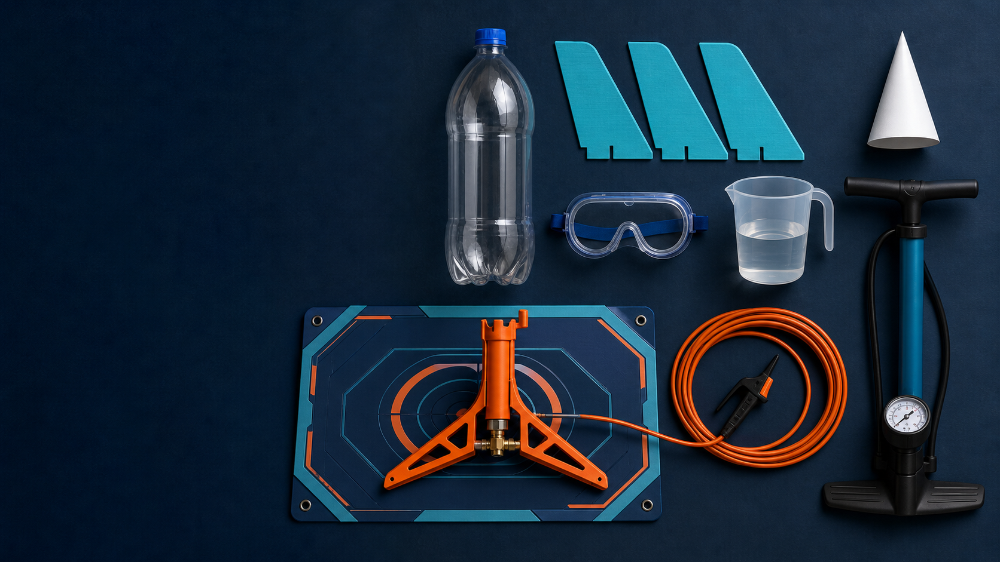
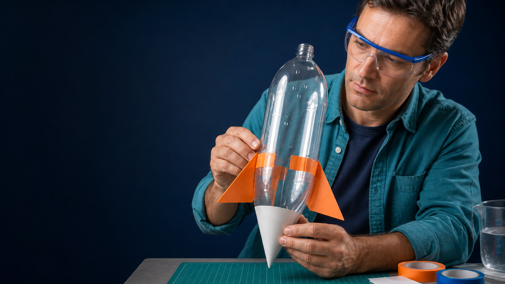
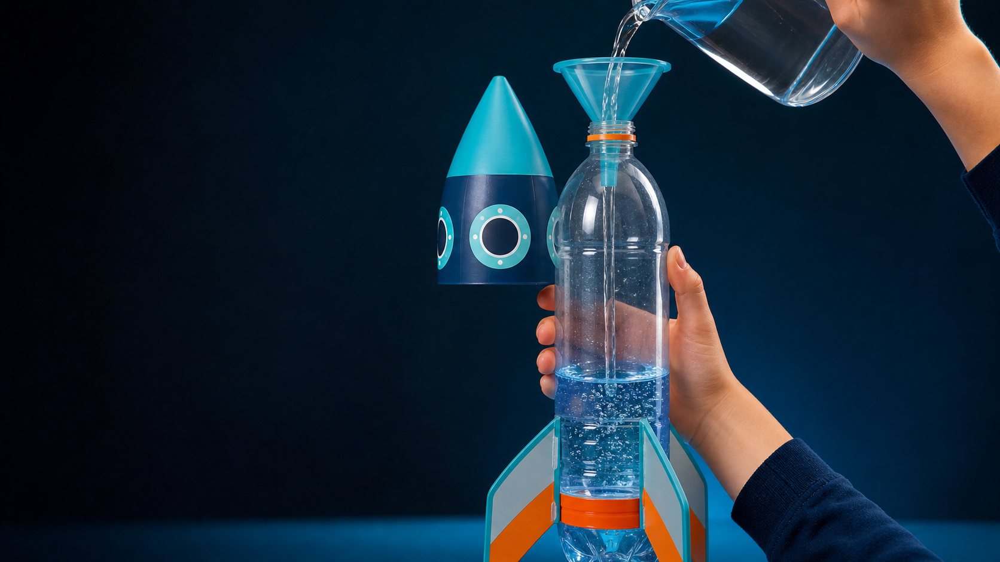
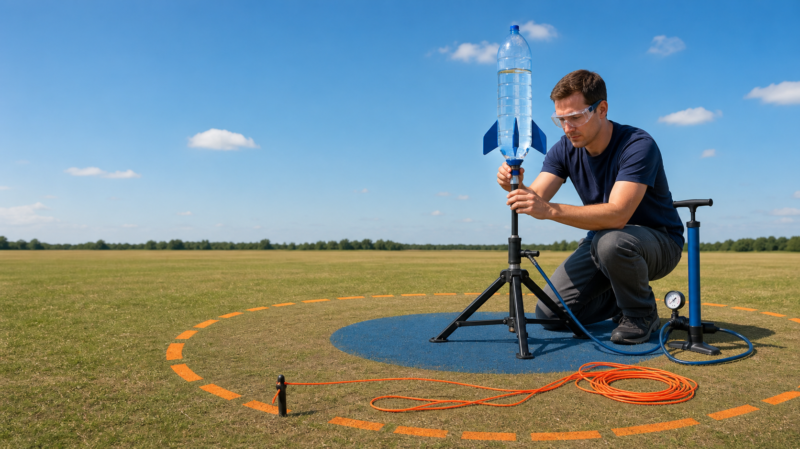
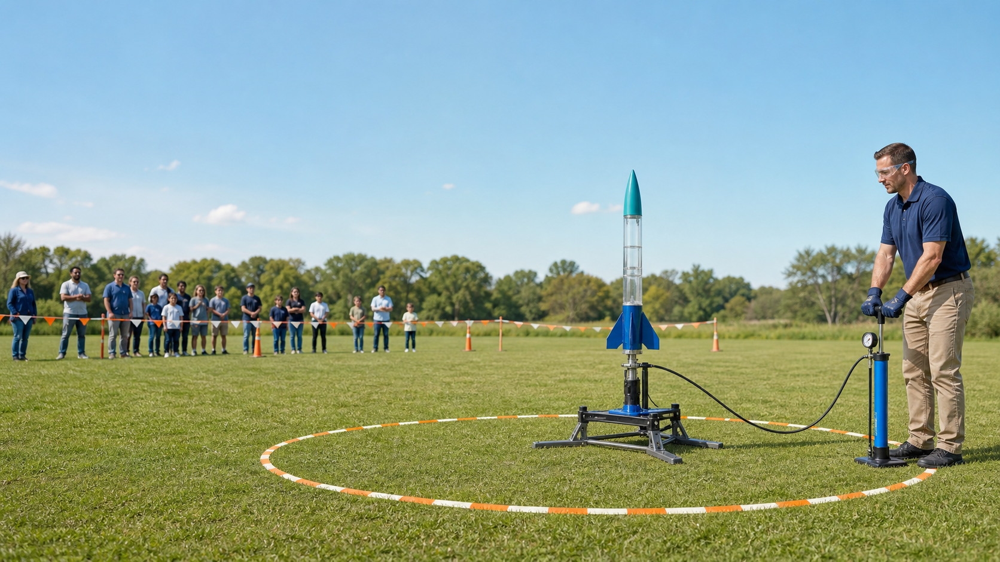
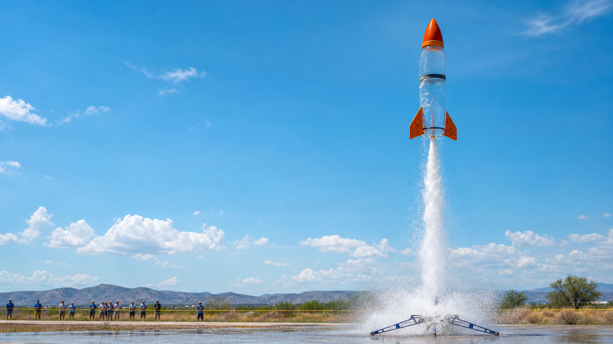
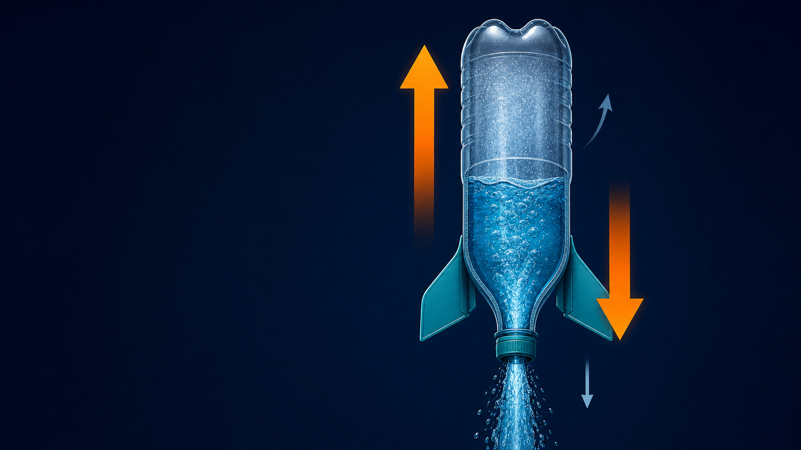
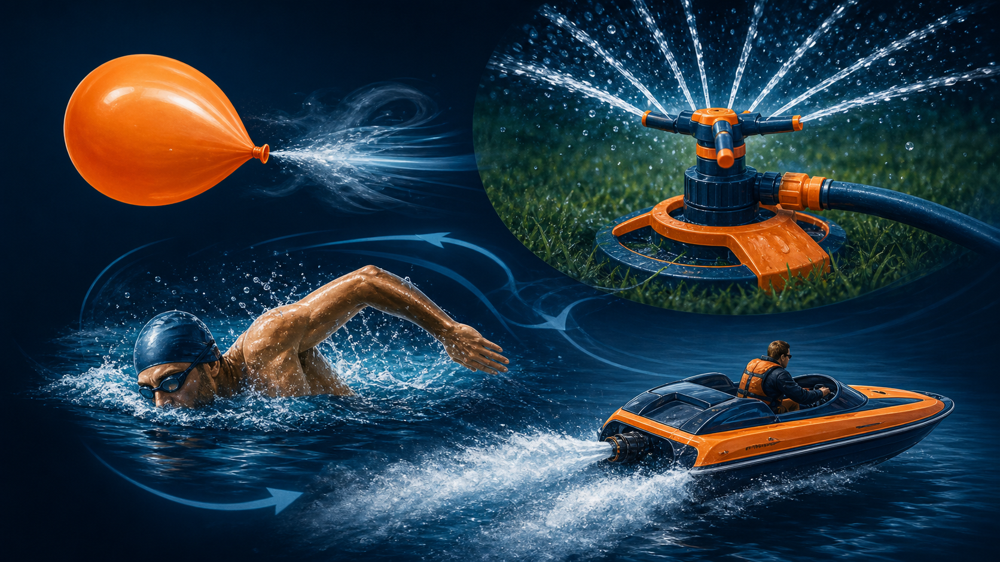

Khí nén tích trữ năng lượng
Không khí bị nén có áp suất cao hơn môi trường xung quanh.
Một chai nhựa, một dòng nước phụt xuống — và ba ý tưởng lớn cùng cất cánh: áp suất, phản lực, bảo toàn động lượng.
Không khí bị nén có áp suất cao hơn môi trường xung quanh.
Khi cửa phóng mở, khí giãn ra và ép nước thoát nhanh qua cổ chai.
Lực đẩy thắng trọng lượng trong thời gian ngắn, tên lửa tăng tốc.
“Hơi” trong bài này là khí nén ở nhiệt độ thường, không phải hơi nước nóng.
Chai là buồng áp suất: chỉ dán cánh bên ngoài; không đục, cắt hay làm mỏng thân chai.

Tại sao 3 cánh? Ba điểm xác định một mặt phẳng, vừa nhẹ vừa tạo ổn định tốt khi các cánh cách nhau khoảng 120°.

⅓ là điểm khởi đầu, không phải “con số thần kỳ”. Quá ít nước → ít khối lượng phản lực; quá nhiều nước → ít không khí nén và tên lửa nặng.

Chỉ người lớn lắp tên lửa. Khi đã nối bơm, không ai bước vào vùng phóng.

Không thử “cao hơn một chút”. Năng lượng trong khí nén tăng cùng áp suất và có thể giải phóng đột ngột.

Dữ liệu tốt biến một màn phóng đẹp thành một thí nghiệm có thể so sánh.

Công cơ học
Năng lượng tích trữ
Động năng
Fchai→nước = −Fnước→chai
Cặp lực Newton III không triệt tiêu nhau, vì chúng tác dụng lên hai vật khác nhau.

p = mv
Nước nhận động lượng hướng xuống; tên lửa nhận động lượng hướng lên.
Trong khoảng thời gian phụt rất ngắn, ảnh hưởng của ngoại lực nhỏ hơn xung lực do dòng nước, nên bảo toàn động lượng giải thích trực tiếp cú tăng tốc.
F ≈ ṁve
Dòng khối lượng lớn hơn (ṁ) hoặc tốc độ phụt cao hơn (vₑ) thường tạo lực đẩy lớn hơn.
Gia tốc tuân theo a = F/m. Thêm nước có thể tăng lực đẩy nhưng cũng tăng khối lượng — vì vậy cần thí nghiệm tìm điểm cân bằng.
Lực đẩy lớn; khối lượng giảm nhanh; tên lửa tăng tốc.
Nước đã hết; trọng lực và lực cản làm tốc độ giảm.
Vận tốc thẳng đứng tức thời gần bằng 0, sau đó đổi chiều.
Trọng lực kéo xuống; lực cản hạn chế tốc độ. Thu hồi sau khi rơi hẳn.
Dự đoán: mức trung gian thường cân bằng tốt hơn giữa lượng nước phụt và thể tích khí nén — nhưng dữ liệu mới là câu trả lời.
| Nước | Lần 1 | Lần 2 | Lần 3 | Trung bình |
|---|---|---|---|---|
| ¼ chai | ___ | ___ | ___ | ___ |
| ⅓ chai | ___ | ___ | ___ | ___ |
| ½ chai | ___ | ___ | ___ | ___ |
Ghi đơn vị (giây hoặc mét), điều kiện gió và mọi lần thử bất thường.
Hiểu phản lực giúp ta thiết kế giao thông, tưới tiêu, thể thao — và xử lý an toàn mọi hệ có áp suất.

Tên lửa nước bay vì khí nén đẩy nước xuống, nước đẩy chai lên, và động lượng được trao đổi giữa hai phần của hệ.
Thiết bị định mức, khoảng cách, người lớn giám sát.
Áp suất, Newton III, bảo toàn động lượng.
Thay một biến, đo lặp lại, để dữ liệu trả lời.
Câu hỏi cuối: Nếu muốn bay ổn định hơn, bạn sẽ thay đổi cánh, lượng nước hay khối lượng chóp — và sẽ kiểm chứng thế nào?